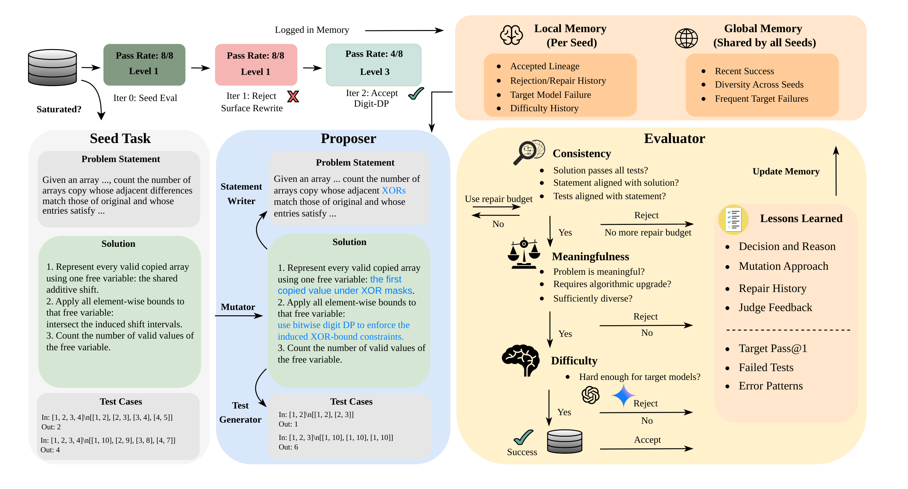
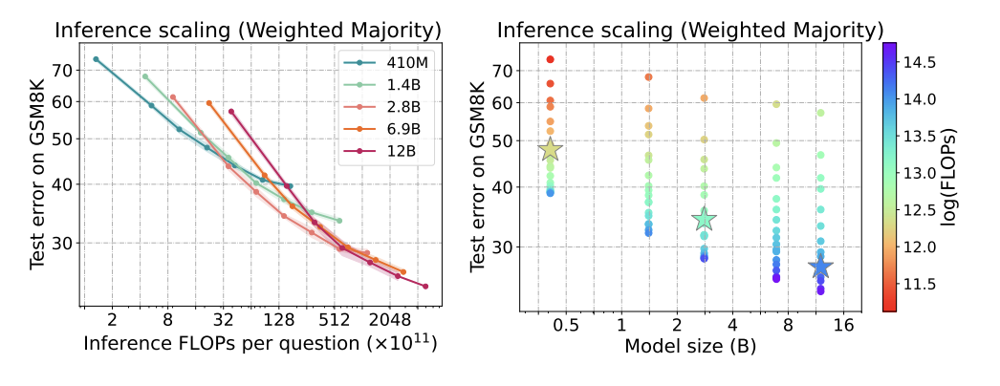

Yangzhen Wu
PhD Student · UC Berkeley · yangzhen_wu@berkeley.edu
I am a first-year Ph.D. student in Computer Science at UC Berkeley, advised by Professor Dawn Song. I received my B.S. in Computer Science from the Tsinghua University Computer Science Pilot Program, also known as the Yao Class.
My research interests lie in inference-time scaling and post-training methods for large language models, with a particular focus on mathematical, coding, and scientific reasoning.
During my undergraduate studies, I visited Carnegie Mellon University as a research intern and also interned at Qwen and ByteDance Seed. I have been fortunate to be mentored and advised by Zhiqing Sun, Sean Welleck, Yiming Yang, Dayiheng Liu, and Tianle Cai.
Selected Work
-

BenchEvolver: Frontier Task Synthesis via Solution-Centric Evolution
* Equal contribution · † Equal advising
arXiv preprint, 2026
-

Inference Scaling Laws: An Empirical Analysis of Compute-Optimal Inference for Problem-Solving with Language Models
ICLR 2025 · Outstanding Paper Award, NeurIPS MATH-AI Workshop
-
News
- 2026.06 Started building my personal homepage.
- 2025.XX Add a recent update here.